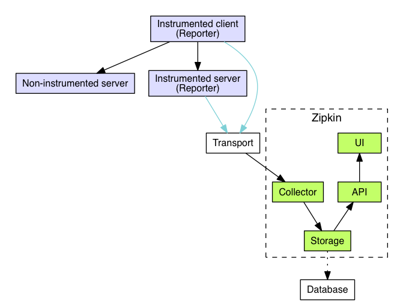
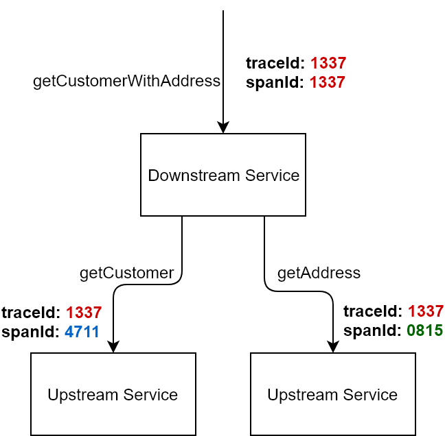
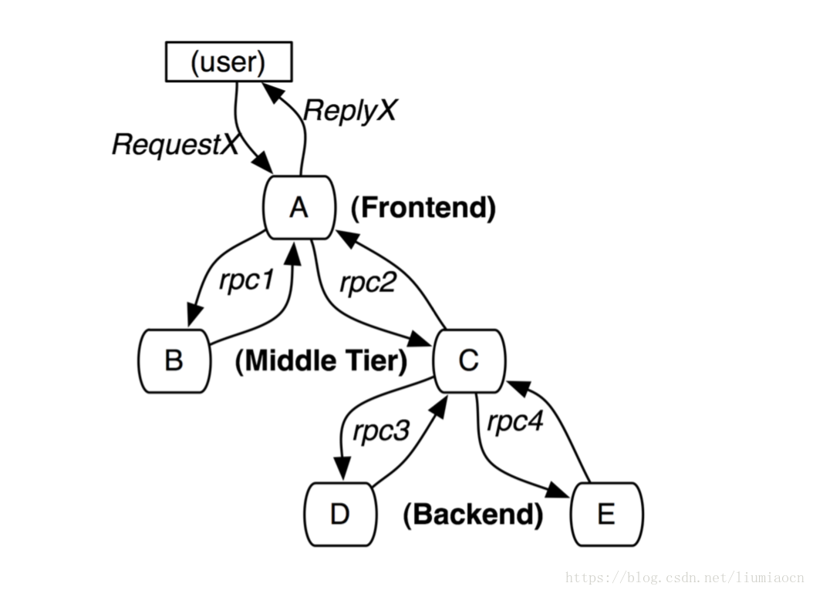
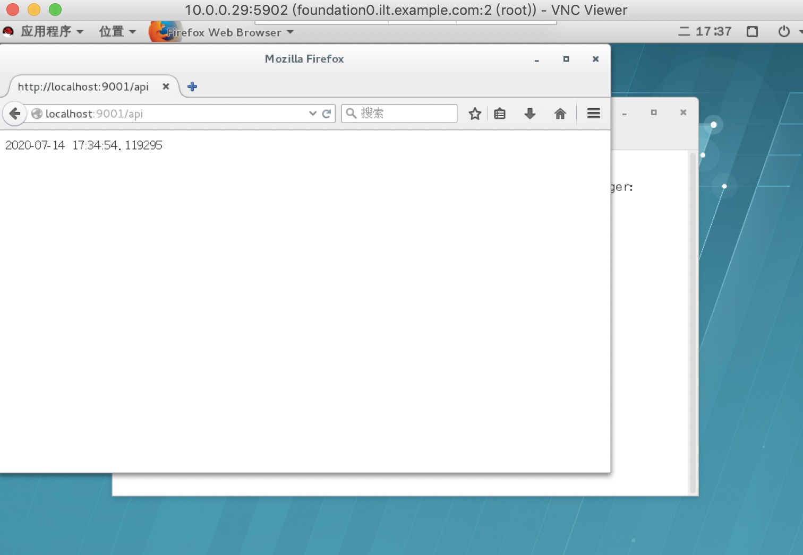
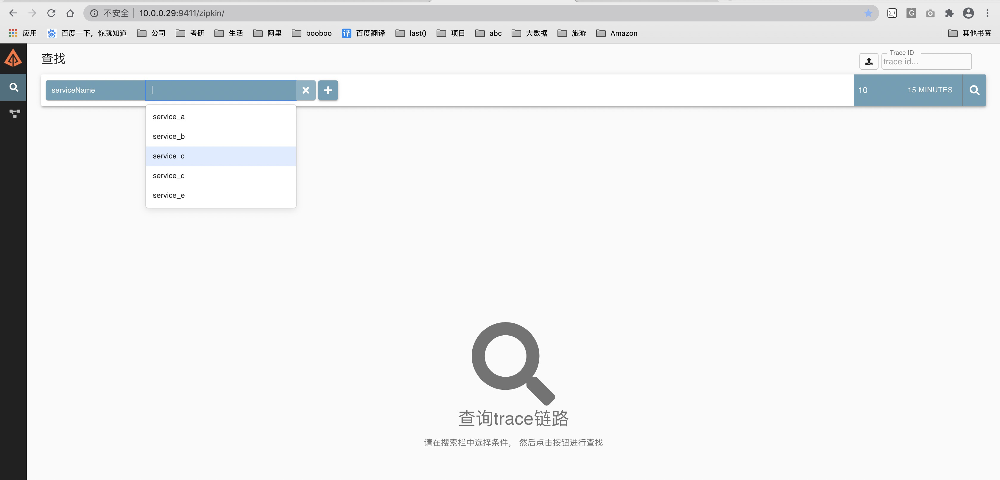
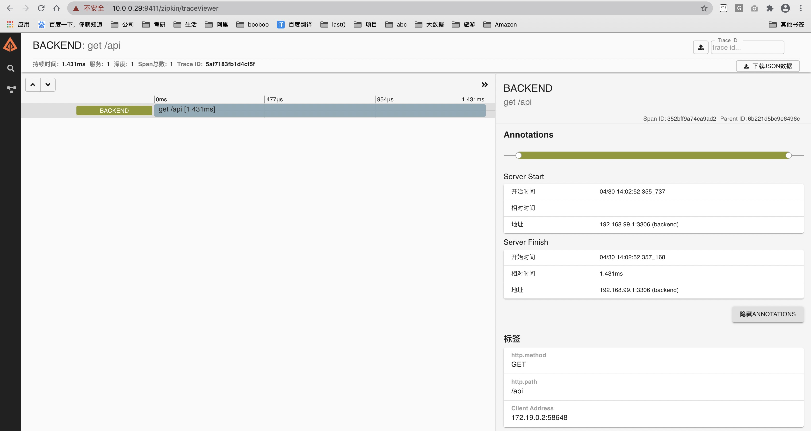
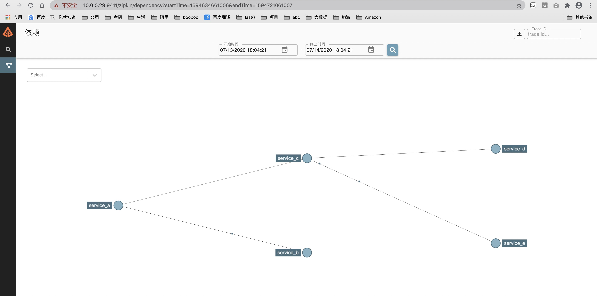
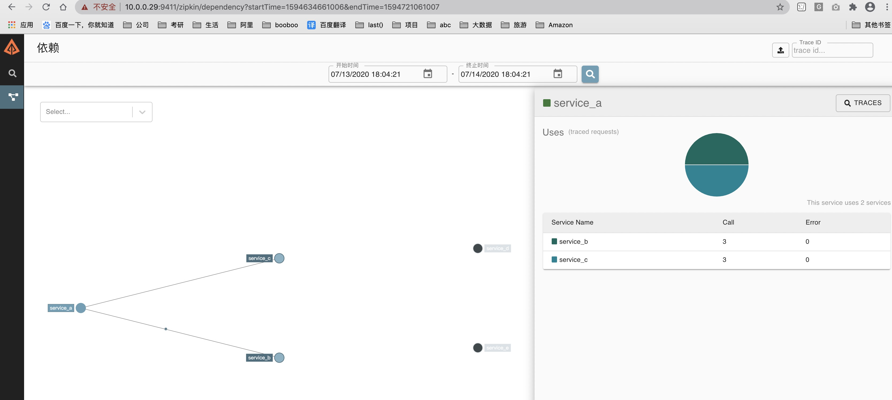

Zipkin简介
Zipkin是什么 Zipkin的官方介绍：https://zipkin.io/
Zipkin是一款开源的分布式实时数据追踪系统（Distributed Tracking System），基于 Google Dapper的论文设计而来，由 Twitter 公司开发贡献。其主要功能是聚集来自各个异构系统的实时监控数据。分布式跟踪系统还有其他比较成熟的实现，例如：Naver的Pinpoint、Apache的HTrace、阿里的鹰眼Tracing、京东的Hydra、新浪的Watchman，美团点评的CAT，skywalking等。
为什么用Zipkin 随着业务越来越复杂，系统也随之进行各种拆分，特别是随着微服务架构和容器技术的兴起，看似简单的一个应用，后台可能有几十个甚至几百个服务在支撑；一个前端的请求可能需要多次的服务调用最后才能完成；当请求变慢或者不可用时，我们无法得知是哪个后台服务引起的，这时就需要解决如何快速定位服务故障点，Zipkin分布式跟踪系统就能很好的解决这样的问题。
Zipkin的一些基本概念？
Brave Brave 是用来装备 Java 程序的类库，提供了面向 Standard Servlet、Spring MVC、Http Client、JAX RS、Jersey、Resteasy 和 MySQL 等接口的装备能力，可以通过编写简单的配置和代码，让基于这些框架构建的应用可以向 Zipkin报告数据。同时 Brave 也提供了非常简单且标准化的接口，在以上封装无法满足要求的时候可以方便扩展与定制。
如下图是 Brave 的结构图。Brave 利用 reporter 向 Zipkin的 Collector 发送 trace 信息。

Brave 主要是利用拦截器在请求前和请求后分别埋点。例如 Spingmvc 监控使用 Interceptors，Mysql 监控使用 statementInterceptors。同理 Dubbo 的监控是利用 com.alibaba.dubbo.rpc.Filter 来过滤生产者和消费者的请求。
traceId 一次请求全局只有一个traceId。用来在海量的请求中找到同一链路的几次请求。比如servlet服务器接收到用户请求，调用dubbo服务，然后将结果返回给用户，整条链路只有一个traceId。开始于用户请求，结束于用户收到结果。
spanId 一个链路中每次请求都会有一个spanId。例如一次rpc，一次sql都会有一个单独的spanId从属于traceId。
cs Clent Sent 客户端发起请求的时间，比如 dubbo 调用端开始执行远程调用之前。
cr Client Receive 客户端收到处理完请求的时间。
ss Server Receive 服务端处理完逻辑的时间。
sr Server Receive 服务端收到调用端请求的时间。
sr - cs = 请求在网络上的耗时 ss - sr = 服务端处理请求的耗时 cr - ss = 回应在网络上的耗时 cr - cs = 一次调用的整体耗时
Zipkin的工作过程 当用户发起一次调用时，Zipkin 的客户端会在入口处为整条调用链路生成一个全局唯一的 trace id，并为这条链路中的每一次分布式调用生成一个 span id。span 与 span 之间可以有父子嵌套关系，代表分布式调用中的上下游关系。span 和 span 之间可以是兄弟关系，代表当前调用下的两次子调用。一个 trace 由一组 span 组成，可以看成是由 trace 为根节点，span 为若干个子节点的一棵树。
Zipkin 会将 trace 相关的信息在调用链路上传递，并在每个调用边界结束时异步的把当前调用的耗时信息上报给 Zipkin Server。Zipkin Server 在收到 trace 信息后，将其存储起来。随后 Zipkin 的 Web UI 会通过 API 访问的方式从存储中将 trace 信息提取出来分析并展示。

安装Zipkin Zipkin的 github 地址：https://github.com/apache/incubator-zipkin
安装Docker CentOS 7 (使用yum进行安装)
step 1: 安装必要的一些系统工具
sudo yum install -y yum-utils device-mapper-persistent-data lvm2
Step 2: 添加软件源信息
sudo yum-config-manager --add-repo http://mirrors.aliyun.com/docker-ce/linux/centos/docker-ce.repocat /etc/yum.repos.d/centos.repo[centos7] name='centos' baseurl='http://mirror.centos.org/centos/7/os/x86_64/' enabled=1 gpgcheck=0 [centos7-extra] name='centos extra' baseurl='http://mirror.centos.org/centos/7/extras/x86_64/' enabled=1 gpgcheck=0
Step 3: 更新并安装Docker-CE
sudo yum makecache fastsudo yum list docker-ce --showduplicates | sort -rsudo yum -y install pigz container-selinuxsudo yum -y install docker-ce
Step 4: 开启Docker服务
sudo systemctl start dockerdocker run hello-world
docker-compose Compose 是用于定义和运行多容器 Docker 应用程序的工具。通过 Compose，您可以使用 YML 文件来配置应用程序需要的所有服务。然后，使用一个命令，就可以从 YML 文件配置中创建并启动所有服务。
curl -L "https://github.com/docker/compose/releases/download/1.24.1/docker-compose-$(uname -s) -$(uname -m) " -o /usr/local/bin/docker-compose chmod +x /usr/local/bin/docker-composeln -s /usr/local/bin/docker-compose /usr/bin/docker-composedocker-compose --version
docker部署zipkin docker run -d -p 9411:9411 openzipkin/zipkin
运行结果
[root@foundation0 ~]# docker pull openzipkin/zipkin Using default tag: latest latest: Pulling from openzipkin/zipkin Digest: sha256:096200b68b0c56ab3446622a94c8d1a64c849b36d068c3bcf0799c73435d2e48 Status: Image is up to date for openzipkin/zipkin:latest docker.io/openzipkin/zipkin:latest [root@foundation0 ~]# docker images REPOSITORY TAG IMAGE ID CREATED SIZE openzipkin/zipkin latest 40f2f21f6707 9 days ago 158MB hello-world latest bf756fb1ae65 6 months ago 13.3kB [root@foundation0 ~]# docker run -d --restart always -p 9411:9411 --name zipkin openzipkin/zipkin f0887b77042cdd151f9366f9830111e69446e860ff8c276802bea3b50f6c5efc [root@foundation0 ~]# ps -ef|grep 9411 root 25957 6391 0 17:01 ? 00:00:00 /usr/bin/docker-proxy -proto tcp -host-ip 0.0.0.0 -host-port 9411 -container-ip 172.17.0.2 -container-port 9411 root 26054 5611 0 17:01 pts/1 00:00:00 grep --color=auto 9411 [root@foundation0 ~]# docker ps -a CONTAINER ID IMAGE COMMAND CREATED STATUS PORTS NAMES f0887b77042c openzipkin/zipkin "/busybox/sh run.sh" 16 seconds ago Up 14 seconds 9410/tcp, 0.0.0.0:9411->9411/tcp zipkin 9856b62b0130 hello-world "/hello" About an hour ago Exited (0) About an hour ago clever_engelbart
grant all on ziplin.* to 'ziplin' @'%' identified by 'Zyadmin@123' ; vi docker-compose.yml version: '2' services: zipkin: image: openzipkin/zipkin container_name: zipkin environment: - STORAGE_TYPE=mysql - MYSQL_DB=zipkin - MYSQL_USER=zipkin - MYSQL_PASS=Zyadmin#123 - MYSQL_HOST=你的数据库IP地址 - MYSQL_TCP_PORT=3306 network_mode: host ports: - 9411:9411 create database zipkin; CREATE TABLE IF NOT EXISTS zipkin_spans ( trace_id_high BIGINT NOT NULL DEFAULT 0 COMMENT 'If non zero, this means the trace uses 128 bit traceIds instead of 64 bit' , `trace_id` BIGINT NOT NULL, `id ` BIGINT NOT NULL, `name` VARCHAR(255) NOT NULL, `parent_id` BIGINT, `debug` BIT(1), `start_ts` BIGINT COMMENT 'Span.timestamp(): epoch micros used for endTs query and to implement TTL' , `duration` BIGINT COMMENT 'Span.duration(): micros used for minDuration and maxDuration query' ) ENGINE = InnoDB ROW_FORMAT = COMPRESSED CHARACTER SET = utf8 COLLATE utf8_general_ci; ALTER TABLE zipkin_spans ADD UNIQUE KEY (`trace_id_high`, `trace_id`, `id `) COMMENT 'ignore insert on duplicate' ; ALTER TABLE zipkin_spans ADD INDEX (`trace_id_high`, `trace_id`, `id `) COMMENT 'for joining with zipkin_annotations' ; ALTER TABLE zipkin_spans ADD INDEX (`trace_id_high`, `trace_id`) COMMENT 'for getTracesByIds' ; ALTER TABLE zipkin_spans ADD INDEX (`name`) COMMENT 'for getTraces and getSpanNames' ; ALTER TABLE zipkin_spans ADD INDEX (`start_ts`) COMMENT 'for getTraces ordering and range' ; CREATE TABLE IF NOT EXISTS zipkin_annotations ( `trace_id_high` BIGINT NOT NULL DEFAULT 0 COMMENT 'If non zero, this means the trace uses 128 bit traceIds instead of 64 bit' , `trace_id` BIGINT NOT NULL COMMENT 'coincides with zipkin_spans.trace_id' , `span_id` BIGINT NOT NULL COMMENT 'coincides with zipkin_spans.id' , `a_key` VARCHAR(255) NOT NULL COMMENT 'BinaryAnnotation.key or Annotation.value if type == -1' , `a_value` BLOB COMMENT 'BinaryAnnotation.value(), which must be smaller than 64KB' , `a_type` INT NOT NULL COMMENT 'BinaryAnnotation.type() or -1 if Annotation' , `a_timestamp` BIGINT COMMENT 'Used to implement TTL; Annotation.timestamp or zipkin_spans.timestamp' , `endpoint_ipv4` INT COMMENT 'Null when Binary/Annotation.endpoint is null' , `endpoint_ipv6` BINARY(16) COMMENT 'Null when Binary/Annotation.endpoint is null, or no IPv6 address' , `endpoint_port` SMALLINT COMMENT 'Null when Binary/Annotation.endpoint is null' , `endpoint_service_name` VARCHAR(255) COMMENT 'Null when Binary/Annotation.endpoint is null' ) ENGINE = InnoDB ROW_FORMAT = COMPRESSED CHARACTER SET = utf8 COLLATE utf8_general_ci; ALTER TABLE zipkin_annotations ADD UNIQUE KEY (`trace_id_high`, `trace_id`, `span_id`, `a_key`, `a_timestamp`) COMMENT 'Ignore insert on duplicate' ; ALTER TABLE zipkin_annotations ADD INDEX (`trace_id_high`, `trace_id`, `span_id`) COMMENT 'for joining with zipkin_spans' ; ALTER TABLE zipkin_annotations ADD INDEX (`trace_id_high`, `trace_id`) COMMENT 'for getTraces/ByIds' ; ALTER TABLE zipkin_annotations ADD INDEX (`endpoint_service_name`) COMMENT 'for getTraces and getServiceNames' ; ALTER TABLE zipkin_annotations ADD INDEX (`a_type`) COMMENT 'for getTraces and autocomplete values' ; ALTER TABLE zipkin_annotations ADD INDEX (`a_key`) COMMENT 'for getTraces and autocomplete values' ; ALTER TABLE zipkin_annotations ADD INDEX (`trace_id`, `span_id`, `a_key`) COMMENT 'for dependencies job' ; CREATE TABLE IF NOT EXISTS zipkin_dependencies ( `day` DATE NOT NULL, `parent` VARCHAR(255) NOT NULL, `child` VARCHAR(255) NOT NULL, `call_count` BIGINT, `error_count` BIGINT ) ENGINE = InnoDB ROW_FORMAT = COMPRESSED CHARACTER SET = utf8 COLLATE utf8_general_ci; ALTER TABLE zipkin_dependencies ADD UNIQUE KEY (`day`, `parent`, `child`); root@MySQL-01 17:39: [zipkin]> show tables; +---------------------+ | Tables_in_zipkin | +---------------------+ | zipkin_annotations | | zipkin_dependencies | | zipkin_spans | +---------------------+ 3 rows in set (0.00 sec) docker-compose up -d Creating zipkin ... done docker-compose logs [root@foundation0 docker_booboo]# docker-compose up -d Creating zipkin ... done [root@foundation0 docker_booboo]# docker-compose logs Attaching to zipkin zipkin | MySQL host: 10.200.6.53 zipkin | zipkin | oo zipkin | oooo zipkin | oooooo zipkin | oooooooo zipkin | oooooooooo zipkin | oooooooooooo zipkin | ooooooo ooooooo zipkin | oooooo ooooooo zipkin | oooooo ooooooo zipkin | oooooo o o oooooo zipkin | oooooo oo oo oooooo zipkin | ooooooo oooo oooo ooooooo zipkin | oooooo ooooo ooooo ooooooo zipkin | oooooo oooooo oooooo ooooooo zipkin | oooooooo oo oo oooooooo zipkin | ooooooooooooo oo oo ooooooooooooo zipkin | oooooooooooo oooooooooooo zipkin | oooooooo oooooooo zipkin | oooo oooo zipkin | zipkin | ________ ____ _ _____ _ _ zipkin | |__ /_ _| _ \| |/ /_ _| \ | | zipkin | / / | || |_) | ' / | || \| | zipkin | / /_ | || __/| . \ | || |\ | zipkin | |____|___|_| |_|\_\___|_| \_| zipkin | zipkin | :: version 2.21.5 :: commit 7f4f274 :: zipkin | zipkin | 2020-07-13 09:44:25.300 INFO 1 --- [ main] z.s.ZipkinServer : Starting ZipkinServer on foundation0.ilt.example.com with PID 1 (/zipkin/BOOT-INF/classes started by zipkin in /zipkin) zipkin | 2020-07-13 09:44:25.304 INFO 1 --- [ main] z.s.ZipkinServer : The following profiles are active: shared zipkin | 2020-07-13 09:44:26.161 INFO 1 --- [ main] o.s.s.c.ThreadPoolTaskExecutor : Initializing ExecutorService zipkin | 2020-07-13 09:44:26.163 INFO 1 --- [ main] o.s.s.c.ThreadPoolTaskExecutor : Initializing ExecutorService ' mysqlExecutor' zipkin | 2020-07-13 09:44:26.591 INFO 1 --- [ main] c.l.a.c.u.SystemInfo : hostname: foundation0.ilt.example.com (from /proc/sys/kernel/hostname) zipkin | 2020-07-13 09:44:26.994 INFO 1 --- [oss-http-*:9411] c.l.a.s.Server : Serving HTTP at /[0:0:0:0:0:0:0:0%0]:9411 - http://127.0.0.1:9411/ zipkin | 2020-07-13 09:44:26.997 INFO 1 --- [ main] c.l.a.s.ArmeriaAutoConfiguration : Armeria server started at ports: {/[0:0:0:0:0:0:0:0%0]:9411=ServerPort(/[0:0:0:0:0:0:0:0%0]:9411, [http])} zipkin | 2020-07-13 09:44:27.029 INFO 1 --- [ main] z.s.ZipkinServer : Started ZipkinServer in 2.658 seconds (JVM running for 3.605)
zipkin跟踪Python项目 参考：https://blog.csdn.net/liumiaocn/article/details/80657943
Python项目依赖
python 2.7
为了在Python项目中使用zipkin，需要py_zipkin/pyramid/pyramid_zipkin 。在CentOS系Linux发行版上命令如下：
yum install python-virtualenv python-devel mkdir python_project_zipkin cd python_project_zipkin virtualenv venv source venv/bin/activate pip install --upgrade pip pip install --trusted-host pypi.org --trusted-host files.pythonhosted.org py_zipkin pyramid pyramid_zipkin requests
操作记录:
[root@foundation0 docker_booboo]# mkdir python_project_zipkin;cd python_project_zipkin [root@foundation0 docker_booboo]# /usr/bin/virtualenv venv New python executable in /alidata/docker_booboo/python_project_zipkin/venv/bin/python Installing setuptools, pip, wheel...done. [root@foundation0 docker_booboo]# ll 总用量 4 -rw-r--r--. 1 root root 1161 7月 13 17:58 docker-compose.yml drwxr-xr-x. 5 root root 52 7月 14 17:02 python_project_zipkin [root@foundation0 docker_booboo]# cd python_project_zipkin/venv [root@foundation0 venv]# ll 总用量 4 drwxr-xr-x. 2 root root 4096 7月 14 17:02 bin drwxr-xr-x. 2 root root 22 7月 14 17:02 include drwxr-xr-x. 3 root root 22 7月 14 17:02 lib lrwxrwxrwx. 1 root root 3 7月 14 17:02 lib64 -> lib [root@foundation0 venv]# source bin/ activate activate.fish easy_install pip pip2.7 python2 python-config activate.csh activate_this.py easy_install-2.7 pip2 python python2.7 wheel [root@foundation0 python_project_zipkin]# source bin/activate (venv) [root@foundation0 python_project_zipkin]# which pip /alidata/docker_booboo/python_project_zipkin/venv/bin/pip (python_project_zipkin) [root@foundation0 python_project_zipkin]# pip install –trusted-host pypi.org –trusted-host files.pythonhosted.org py_zipkin pyramid pyramid_zipkin Invalid requirement: '–trusted-host' Traceback (most recent call last): File "/alidata/docker_booboo/python_project_zipkin/lib/python2.7/site-packages/pip/req/req_install.py" , line 82, in __init__ req = Requirement(req) File "/alidata/docker_booboo/python_project_zipkin/lib/python2.7/site-packages/pip/_vendor/packaging/requirements.py" , line 96, in __init__ requirement_string[e.loc:e.loc + 8])) InvalidRequirement: Invalid requirement, parse error at "'\xe2\x80\x93trust'" You are using pip version 9.0.1, however version 20.1.1 is available. You should consider upgrading via the 'pip install --upgrade pip' command . (python_project_zipkin) [root@foundation0 python_project_zipkin]# pip install --upgrade pip Collecting pip Downloading http://mirrors.aliyun.com/pypi/packages/43/84/23ed6a1796480a6f1a2d38f2802901d078266bda38388954d01d3f2e821d/pip-20.1.1-py2.py3-none-any.whl (1.5MB) 100% |████████████████████████████████| 1.5MB 61.9MB/s Installing collected packages: pip Found existing installation: pip 9.0.1 Uninstalling pip-9.0.1: Successfully uninstalled pip-9.0.1 Successfully installed pip-20.1.1 (python_project_zipkin) [root@foundation0 python_project_zipkin]# pip install --trusted-host pypi.org --trusted-host files.pythonhosted.org py_zipkin pyramid pyramid_zipkin DEPRECATION: Python 2.7 reached the end of its life on January 1st, 2020. Please upgrade your Python as Python 2.7 is no longer maintained. pip 21.0 will drop support for Python 2.7 in January 2021. More details about Python 2 support in pip, can be found at https://pip.pypa.io/en/latest/development/release-process/#python-2-support Looking in indexes: http://mirrors.aliyun.com/pypi/simple/ Collecting py_zipkin Downloading http://mirrors.aliyun.com/pypi/packages/08/fe/02e113bb7720d4ec04f03a9e0902e2fa221c703d00b66cc453b242fcf383/py_zipkin-0.20.0-py2.py3-none-any.whl (52 kB) |████████████████████████████████| 52 kB 10.7 MB/s Collecting pyramid Downloading http://mirrors.aliyun.com/pypi/packages/4e/4f/6fe39af43fadc6d6c12f4cff9ed438f4fed20245614170959b38fe9f762d/pyramid-1.10.4-py2.py3-none-any.whl (325 kB) |████████████████████████████████| 325 kB 65.5 MB/s Collecting pyramid_zipkin Downloading http://mirrors.aliyun.com/pypi/packages/de/70/62892aa6f6b80f83e8ba2a2b83bada1aef2854f4a51385c3344050d7828c/pyramid_zipkin-0.27.0-py2.py3-none-any.whl (11 kB) Collecting enum34; python_version == "2.7" Downloading http://mirrors.aliyun.com/pypi/packages/6f/2c/a9386903ece2ea85e9807e0e062174dc26fdce8b05f216d00491be29fad5/enum34-1.1.10-py2-none-any.whl (11 kB) Collecting thriftpy2>=0.4.0 Downloading http://mirrors.aliyun.com/pypi/packages/a9/f0/9bf08e6b5983aa6a6103818da21eadfaea1ad99ec9882be3e75a30e8e9ff/thriftpy2-0.4.11.tar.gz (498 kB) |████████████████████████████████| 498 kB 67.2 MB/s Collecting six Downloading http://mirrors.aliyun.com/pypi/packages/ee/ff/48bde5c0f013094d729fe4b0316ba2a24774b3ff1c52d924a8a4cb04078a/six-1.15.0-py2.py3-none-any.whl (10 kB) Collecting hupper>=1.5 Downloading http://mirrors.aliyun.com/pypi/packages/48/7f/06ace28143b2cb3a4b14c9d9e5165741d2d133ef331b616acf47ab5c3517/hupper-1.10.2-py2.py3-none-any.whl (26 kB) Collecting venusian>=1.0 Downloading http://mirrors.aliyun.com/pypi/packages/72/46/ffe45f3b4a99309387551f4a06ed7e6c06fb163226e63b09aa5d6a21a280/venusian-2.1.0-py2.py3-none-any.whl (33 kB) Collecting zope.interface>=3.8.0 Downloading http://mirrors.aliyun.com/pypi/packages/bb/79/6840e9ca1a68717d36248eb15bc4c01a56d252c66f03abc0202cb9ff4cbb/zope.interface-5.1.0-cp27-cp27mu-manylinux2010_x86_64.whl (230 kB) |████████████████████████████████| 230 kB 71.3 MB/s Collecting zope.deprecation>=3.5.0 Downloading http://mirrors.aliyun.com/pypi/packages/f9/26/b935bbf9d27e898b87d80e7873a0200cebf239253d0afe7a59f82fe90fff/zope.deprecation-4.4.0-py2.py3-none-any.whl (10 kB) Requirement already satisfied: setuptools in ./lib/python2.7/site-packages (from pyramid) (28.8.0) Collecting plaster-pastedeploy Downloading http://mirrors.aliyun.com/pypi/packages/11/c4/0470056ea324c7a420c22647be512dec1b5e32b1b6e77e27c61838d2811c/plaster_pastedeploy-0.7-py2.py3-none-any.whl (7.8 kB) Collecting repoze.lru>=0.4; python_version < "3.2" Downloading http://mirrors.aliyun.com/pypi/packages/12/bc/595a77c4b5e204847fdf19268314ef59c85193a9dc9f83630fc459c0fee5/repoze.lru-0.7.tar.gz (19 kB) Collecting translationstring>=0.4 Downloading http://mirrors.aliyun.com/pypi/packages/3b/98/36187601a15e3d37e9bfcf0e0e1055532b39d044353b06861c3a519737a9/translationstring-1.4-py2.py3-none-any.whl (15 kB) Collecting plaster Downloading http://mirrors.aliyun.com/pypi/packages/61/29/3ac8a5d03b2d9e6b876385066676472ba4acf93677acfc7360b035503d49/plaster-1.0-py2.py3-none-any.whl (14 kB) Collecting webob>=1.8.3 Downloading http://mirrors.aliyun.com/pypi/packages/18/3c/de37900faff3c95c7d55dd557aa71bd77477950048983dcd4b53f96fde40/WebOb-1.8.6-py2.py3-none-any.whl (114 kB) |████████████████████████████████| 114 kB 79.8 MB/s Collecting ply<4.0,>=3.4 Downloading http://mirrors.aliyun.com/pypi/packages/a3/58/35da89ee790598a0700ea49b2a66594140f44dec458c07e8e3d4979137fc/ply-3.11-py2.py3-none-any.whl (49 kB) |████████████████████████████████| 49 kB 68.0 MB/s Collecting PasteDeploy>=2.0 Downloading http://mirrors.aliyun.com/pypi/packages/fb/18/196e5070ced83bb81edd83c79545232d1d2ec55e3a099a146a3333244a6b/PasteDeploy-2.1.0-py2.py3-none-any.whl (17 kB) Building wheels for collected packages: thriftpy2, repoze.lru Building wheel for thriftpy2 (setup.py) ... done Created wheel for thriftpy2: filename=thriftpy2-0.4.11-cp27-cp27mu-linux_x86_64.whl size=832256 sha256=55e3a0d96f87598662b3ed7b16d81536e48768185ade7cc6074a006182d595f9 Stored in directory: /root/.cache/pip/wheels/3c/95/1f/eae02a041591574267b5216814814a804226c32061d9471b58 Building wheel for repoze.lru (setup.py) ... done Created wheel for repoze.lru: filename=repoze.lru-0.7-py2-none-any.whl size=10931 sha256=fc0e76d5fbca10afcfc65253655d7a7aa63d875f73cb83ffbb8535ce1ee73b55 Stored in directory: /root/.cache/pip/wheels/1c/6e/0b/047aab9e3fd851dc1be351cb286f45513f812376baa966ac18 Successfully built thriftpy2 repoze.lru Installing collected packages: enum34, ply, thriftpy2, six, py-zipkin, hupper, venusian, zope.interface, zope.deprecation, PasteDeploy, plaster, plaster-pastedeploy, repoze.lru, translationstring, webob, pyramid, pyramid-zipkin Successfully installed PasteDeploy-2.1.0 enum34-1.1.10 hupper-1.10.2 plaster-1.0 plaster-pastedeploy-0.7 ply-3.11 py-zipkin-0.20.0 pyramid-1.10.4 pyramid-zipkin-0.27.0 repoze.lru-0.7 six-1.15.0 thriftpy2-0.4.11 translationstring-1.4 venusian-2.1.0 webob-1.8.6 zope.deprecation-4.4.0 zope.interface-5.1.0
模拟dapper论文的调用链 在这篇文章中我们将会模拟在Python项目中如何跟中dapper论文中的三层架构的例子：
层次
服务名称
父span
调用顺序
前端
Frontend：A
无
1
中间
MiddleTier：B
A
2
中间
MiddleTier：C
A
3
后端
Backend：D
C
4
后端
Backend：E
C
5

模拟五个服务 代码上传到了github上，可参看：https://github.com/liumiaocn/easypack/tree/master/zipkin/python
使用python简单地模拟如上地A-E等五个服务，其中A和C为调用节点，而B/D/E为终端节点，A会调用B和C，其示例代码如下，C与之类似：
(venv) [root@foundation0 python_project_zipkin]# ll 总用量 24 -rw-r--r--. 1 root root 2109 7月 14 17:09 A.py -rw-r--r--. 1 root root 1767 7月 14 17:13 B.py -rw-r--r--. 1 root root 2155 7月 14 17:14 C.py -rw-r--r--. 1 root root 1812 7月 14 17:14 D.py -rw-r--r--. 1 root root 1812 7月 14 17:15 E.py -rw-r--r--. 1 root root 1246 7月 14 17:15 test_zipkin.sh drwxr-xr-x. 5 root root 52 7月 14 17:11 venv
再次确认zipkin镜像已pull在本地，如果本地开启了就先关闭并删除容器。
[root@foundation0 ~]# docker ps CONTAINER ID IMAGE COMMAND CREATED STATUS PORTS NAMES cc6c1ec08693 openzipkin/zipkin "/busybox/sh run.sh" 23 hours ago Up 23 hours zipkin [root@foundation0 ~]# ss -luntp|grep docker [root@foundation0 ~]# ss -luntp|grep 9411 tcp LISTEN 0 128 :::9411 :::* users :(("java",pid=5141 ,fd=163 )) [root@foundation0 ~]# docker stop cc6c1ec08693 [root@foundation0 ~]# docker rm cc6c1ec08693
开始运行测试脚本
(venv) [root@foundation0 python_project_zipkin]# bash test_zipkin.sh start bdb9f0f3cf304385fddf3fb2d3b4e73f2286a54e88b9b0ded7ea1483f7a42eb6 demo process: A.py demo process: B.py demo process: C.py demo process: D.py demo process: E.py service Service_B listening : http://localhost:9002 service Service_D listening : http://localhost:9004 service Service_E listening : http://localhost:9005 service Service_A listening : http://localhost:9001 service Service_C listening : http://localhost:9003 demo process: A.py root 15567 15398 19 17:33 pts/0 00:00:00 python A.py demo process: B.py root 15569 15398 19 17:33 pts/0 00:00:00 python B.py demo process: C.py root 15570 15398 19 17:33 pts/0 00:00:00 python C.py demo process: D.py root 15572 15398 18 17:33 pts/0 00:00:00 python D.py demo process: E.py root 15573 15398 19 17:33 pts/0 00:00:00 python E.py
我的环境比较特殊，直接启动docker无法访问，所以还是使用以下方法启动
[root@foundation0 python_project_zipkin]# docker ps CONTAINER ID IMAGE COMMAND CREATED STATUS PORTS NAMES bdb9f0f3cf30 openzipkin/zipkin "/busybox/sh run.sh" 15 minutes ago Up 15 minutes 9410/tcp, 0.0.0.0:9411->9411/tcp zipkin [root@foundation0 python_project_zipkin]# docker stop bdb9f0f3cf30 bdb9f0f3cf30 [root@foundation0 python_project_zipkin]# docker rm bdb9f0f3cf30 bdb9f0f3cf30 [root@foundation0 python_project_zipkin]# docker-compose up -d Creating zipkin ... done [root@foundation0 python_project_zipkin]# docker inspect "docker inspect" requires at least 1 argument.See 'docker inspect --help' . Usage: docker inspect [OPTIONS] NAME|ID [NAME|ID...] Return low-level information on Docker objects [root@foundation0 python_project_zipkin]# docker ps CONTAINER ID IMAGE COMMAND CREATED STATUS PORTS NAMES daeab8b02ac8 openzipkin/zipkin "/busybox/sh run.sh" 22 seconds ago Up 20 seconds zipkin [root@foundation0 python_project_zipkin]# ss -luntp|grep docker [root@foundation0 python_project_zipkin]# ss -luntp|grep 9411 tcp LISTEN 0 128 :::9411 :::* users :(("java",pid=19120 ,fd=163 ))
访问入口服务
通过命令行发起请求curl http://localhost:9001/api
通过浏览器发起请求http://localhost:9001/api
(venv) [root@foundation0 python_project_zipkin]# curl http://localhost:9001/api 127.0.0.1 - - [14/Jul/2020 17:52:52] "GET /apib HTTP/1.1" 200 26 127.0.0.1 - - [14/Jul/2020 17:52:52] "GET /api HTTP/1.1" 200 26 127.0.0.1 - - [14/Jul/2020 17:52:52] "GET /api HTTP/1.1" 200 26 127.0.0.1 - - [14/Jul/2020 17:52:52] "GET /api HTTP/1.1" 200 26 127.0.0.1 - - [14/Jul/2020 17:52:52] "GET /api HTTP/1.1" 200 26

观察Zipkin Web 确认服务个数 再次刷新zipkin，即可看到service name发生变化

确认trace信息 (venv) [root@foundation0 docker_booboo]# curl http://localhost:9001/api 127.0.0.1 - - [14/Jul/2020 18:02:48] "GET /apib HTTP/1.1" 200 26 127.0.0.1 - - [14/Jul/2020 18:02:48] "GET /api HTTP/1.1" 200 26 127.0.0.1 - - [14/Jul/2020 18:02:48] "GET /api HTTP/1.1" 200 26 127.0.0.1 - - [14/Jul/2020 18:02:48] "GET /api HTTP/1.1" 200 26 127.0.0.1 - - [14/Jul/2020 18:02:48] "GET /api HTTP/1.1" 200 26 2020-07-14 18:02:48.687811(venv) [root@foundation0 docker_booboo]# curl http://localhost:9002/apib 127.0.0.1 - - [14/Jul/2020 18:02:52] "GET /apib HTTP/1.1" 200 26 2020-07-14 18:02:52.543569(venv) [root@foundation0 docker_booboo]# curl http://localhost:9003/api 127.0.0.1 - - [14/Jul/2020 18:02:57] "GET /api HTTP/1.1" 200 26 127.0.0.1 - - [14/Jul/2020 18:02:57] "GET /api HTTP/1.1" 200 26 127.0.0.1 - - [14/Jul/2020 18:02:57] "GET /api HTTP/1.1" 200 26 2020-07-14 18:02:57.220548(venv) [root@foundation0 docker_booboo]# curl http://localhost:9004/api 127.0.0.1 - - [14/Jul/2020 18:02:59] "GET /api HTTP/1.1" 200 26 2020-07-14 18:02:59.585916(venv) [root@foundation0 docker_booboo]# curl http://localhost:9005/api 127.0.0.1 - - [14/Jul/2020 18:03:01] "GET /api HTTP/1.1" 200 26 2020-07-14 18:03:01.635659(venv) [root@foundation0 docker_booboo]# curl http://localhost:9001/api 127.0.0.1 - - [14/Jul/2020 18:03:04] "GET /apib HTTP/1.1" 200 26 127.0.0.1 - - [14/Jul/2020 18:03:04] "GET /api HTTP/1.1" 200 26 127.0.0.1 - - [14/Jul/2020 18:03:04] "GET /api HTTP/1.1" 200 26 127.0.0.1 - - [14/Jul/2020 18:03:04] "GET /api HTTP/1.1" 200 26 127.0.0.1 - - [14/Jul/2020 18:03:04] "GET /api HTTP/1.1" 200 26
没有显示出trace信息，手动导入了json

依赖关系 点击find trace即可看到含有5个span的如下信息

